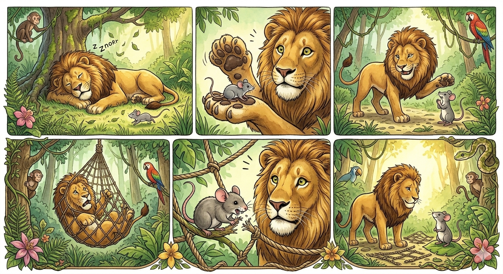

One sunny afternoon in the middle of the jungle, a mighty lion was fast asleep under a tree. He had a full belly from lunch and was snoring so loudly that the leaves shook! “Snore… ROARRR… snore…” Just then, a tiny mouse scurried through the grass, playing and chasing his own tail. “Wheee! Jungle tag!” the mouse squeaked. But—uh-oh! He didn’t see the lion’s big furry paw until… BOING! He ran right over it! GRRRRR! The lion opened one eye and growled. “WHO dares wake me from my nap?!” The mouse froze. “Oh no! I’m so sorry! I didn’t mean to! Please don’t eat me!” the mouse squeaked. The lion stood up and licked his lips. “You’re so tiny! You’d be more of a snack than a meal!” He raised his paw, ready to squish the mouse. But the mouse quickly said, “Wait! If you let me go, I promise I’ll help you one day!” The lion laughed so hard his belly shook. “YOU? Help ME? I’m the King of the Jungle!” But he was in a good mood, so he gently let the mouse go. “Be off with you, little squeaker!” The mouse zipped away, thankful and smiling. Days passed. Then one morning, the lion went for a walk in the jungle—but he didn’t see the trap hidden in the tall grass. SNAP! A net fell from the trees and caught him! “ROAAAARRRR! Let me go!” the lion roared, struggling. But the more he pulled, the tighter the ropes got. Animals peeked from behind trees—but no one dared to help. Then the little mouse heard the roar. “That sounds like… my lion friend!” He raced toward the sound and saw the lion tangled in the net. Without a second thought, the mouse jumped into action. “Hold still! I’ll chew the ropes!” With his sharp little teeth, the mouse nibbled and gnawed. Chomp! Chomp! Chomp! Bit by bit, the ropes snapped. Finally—RIP! The net broke, and the lion was free! The lion looked at the tiny mouse in amazement. “You saved me,” he said softly. “I guess even the smallest friend can make a BIG difference.” The mouse smiled proudly. “Told you I’d help one day!” From that day on, the lion and the mouse were best friends. They played together, watched out for each other, and proved that kindness always comes back around—even in the jungle.